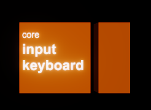

Midi Control
benny is designed to make midi control as fluid as possible. It also attempts to make life easy if you need to change the controllers you use but still be able to play your old songfiles.
Controllers
Controllers - that is midi devices with knobs, sliders or other ways of generating 1-dimensional midi CC or pitchbend messages - are handled by two blocks: core.input.control.auto and core.input.control.basic
core.input.control.basic
There can be as many of these as you want. Pick the physical controller you want the block to represent from the list in the sidebar parameters view.
Connect from the block to whatever it is that you want to control or modulate. You can move physical controls to automatically select them in the new connection view.
core.input.control.auto
There can only be one of these core.input.control.auto blocks present at a time. The controller linked to this block can be used for both automap and normal connections.
Automap
If automap mode is enabled (in the block's parameters) then when a block is selected the controller will map to it.
Controllers with encoders, RGB leds and value feedback are ideal for this (eg Midi Fighter Twister). With a suitable controller the colours and on/off status of knobs match the onscreen ui layout.
In the hardware configuration editor you can assign midi buttons to turn automap mode on and off.
In automap mode if the selected block has more parameters than can be mapped there is an onscreen button to move to the next page of controls. This can also be linked to a midi button in the hardware configuration editor.
You can click the controller icon at the top of the sidebar to turn on automap lock so that it will stay mapped even if you select something else (or nothing).
Basic mode
If nothing is selected then the core.input.control.auto block acts in basic mode.
You can connect from the controller's outputs to any block as with any other connection in benny. If the controller has per-knob leds they will light up to indicate active connections, using the colours set in the block parameters.
Block-exclusive controllers
It's also possible for blocks (for example the mixer) to have a fixed, exclusive connection to a particular midi controller. (Developers: you can use controllermanager.js to accomplish this)
Keyboards
The core.input.keyboard block handles keyboards, grid devices, drum pads, the QWERTY keyboard or any other device that mainly generates midi note messages.
QWERTY input needs to be enabled in the block parameters AND capslock needs to be on. The bottom octave starts at Z = C, the top octaves start at Q = C, and ',' and 'L' are up and down octave controls.
Automap
If the core.input.keyboard block's 'automap' parameter is set to ON then when you select a block or voice that has a midi input the keyboard will map to it automatically. If the block has multiple inputs they'll be listed as buttons, so that you can choose. If you click the keyboard graphic it toggles automap lock and the keyboard will remain mapped even when you select something else (or nothing).

Connections
You can also connect from the core.input.keyboard block to any other block's midi input, as with any other midi connection in benny.
The block also has outputs for modulation, pitchbend (+, -, both) and sustain. If you have a keyboard like the CME XKEY range which outputs continuous polyphonic pressure messages in the form of more note-ons, then the pressure output of this block outputs them separately. There is also a time quantiser for these pressure messages that is synced to the global clock.
Substitution
In the hardware editor for each controller you define you can also select fallback substitutes. These also have to be fully defined in the hardware editor.
For example, in my profile I have entries for LPD-8 and LPD-8 MK II. Each is defined as a possible substitute for the other, so in old songs that expect the LPD-8 (which broke) benny finds the MK II attached and uses that instead (and even though they're configured to use different CCs benny will translate them for you).
This means that if a piece of equipment fails (for example on tour), then as long as you can find a vaguely similar replacement, you can define that in the hardware editor, set it as the substitute for the failed item, and just load all your songs without having to think about it again.